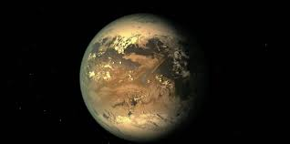
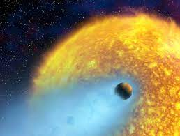
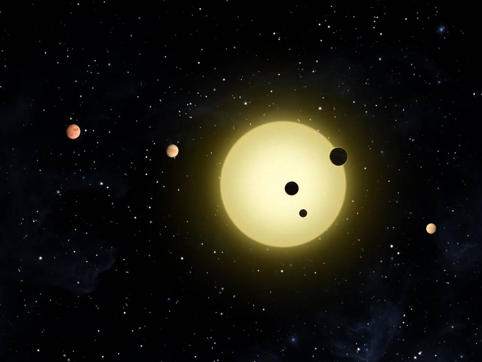
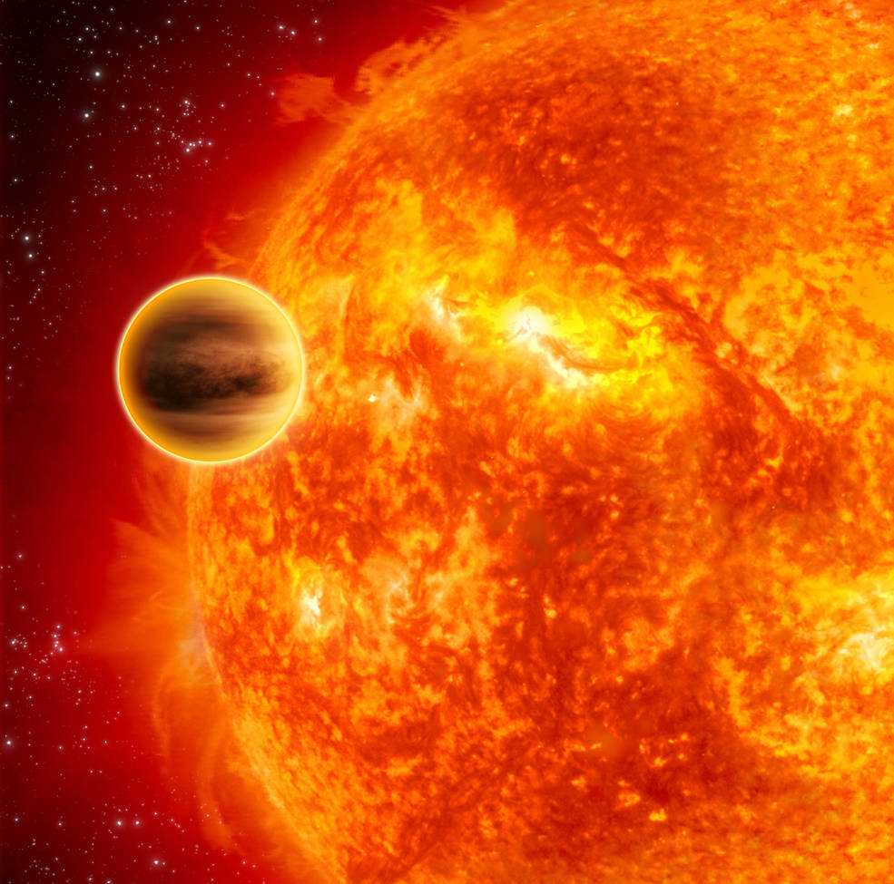

ÖTEGEZEGENLER
Bir ötegezegen veya güneş dışı gezegen, Güneş Sisteminin dışındaki bir gezegendir. Bir ötegezegenin ilk olası kanıtı 1917'de kaydedildi, ancak bu şekilde tanınmadı.
ÖTEGEZEGEN ÖRNERKLERI
Kepler 186F

HD 209458 b

Kepler-11 system

51 Pegasi b
